- 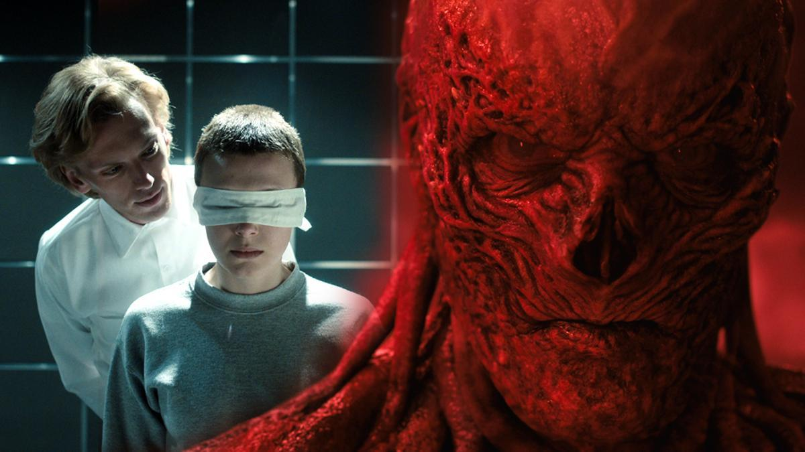
- 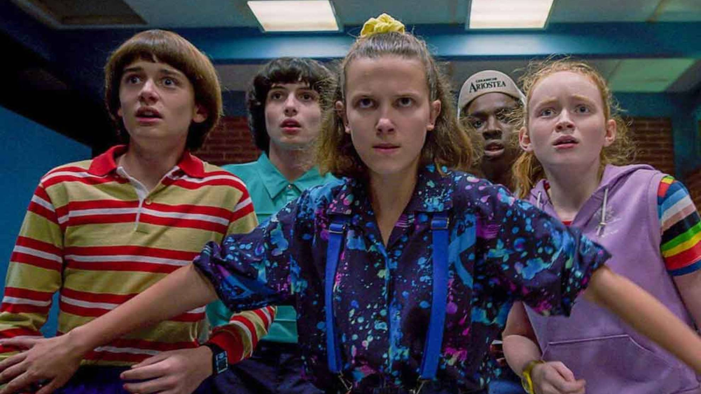
- 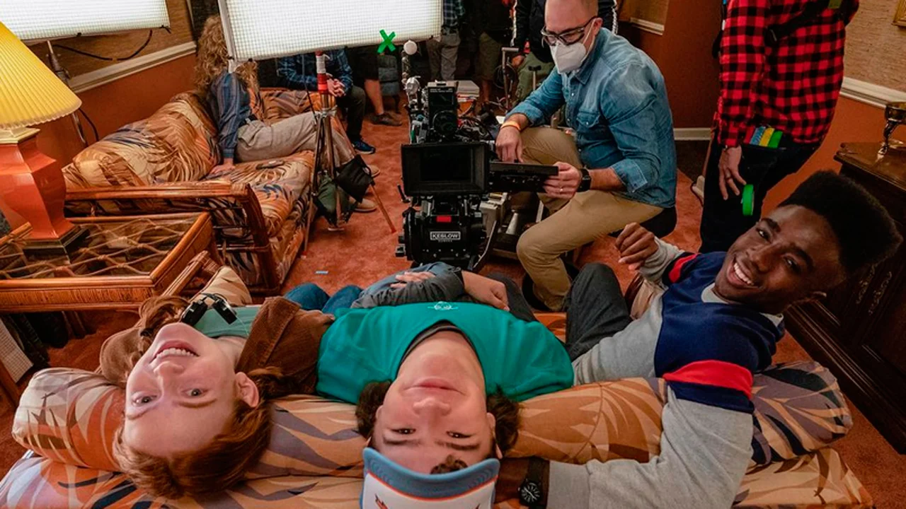
- 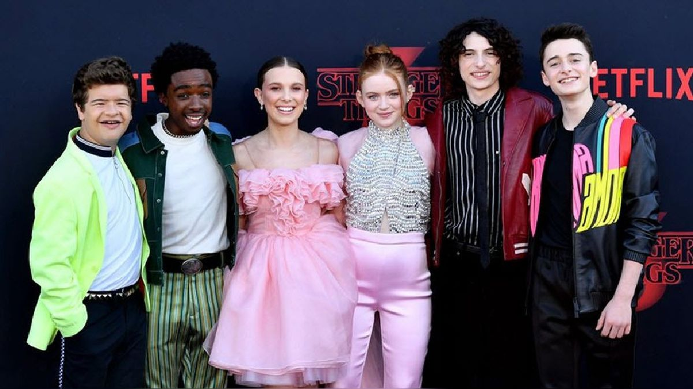
- 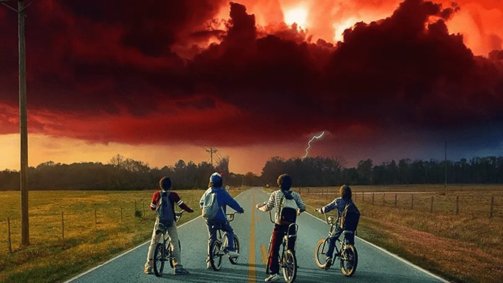
- 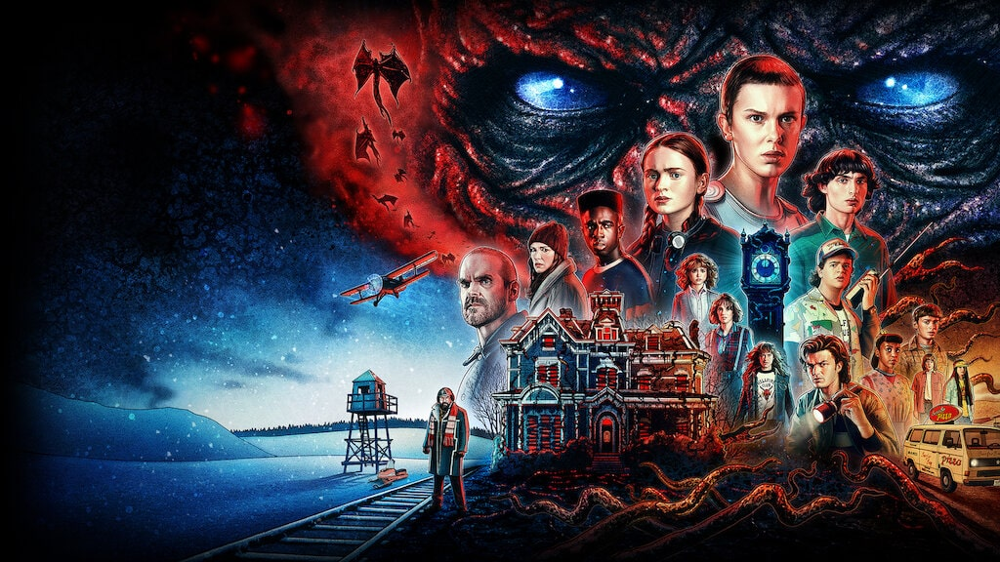
- 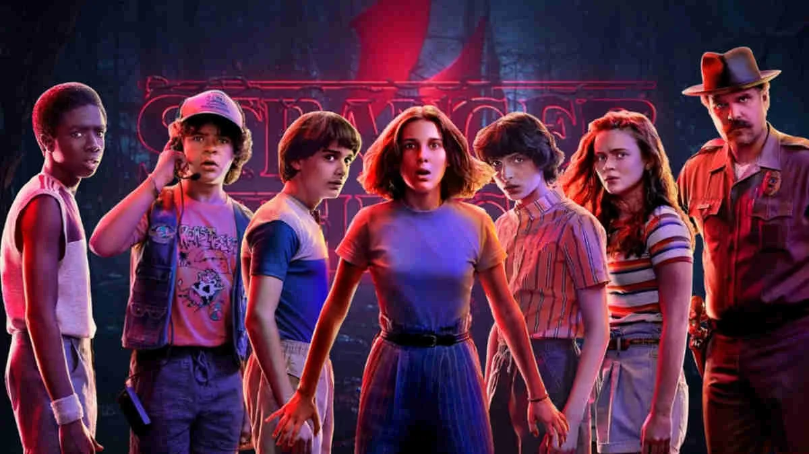
- 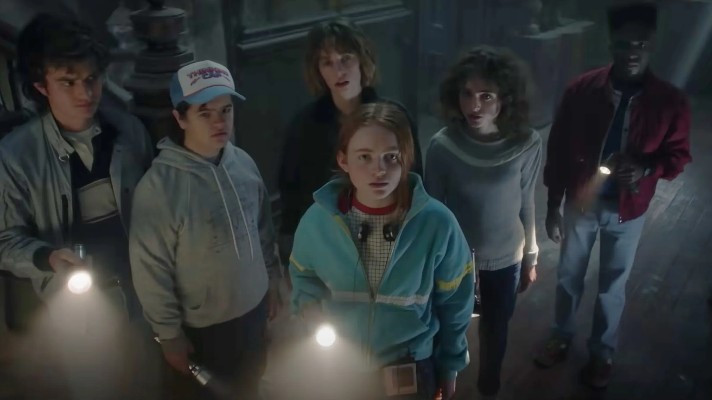
- 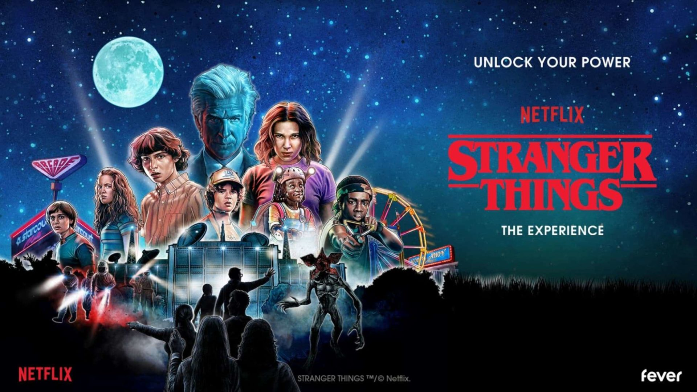
- 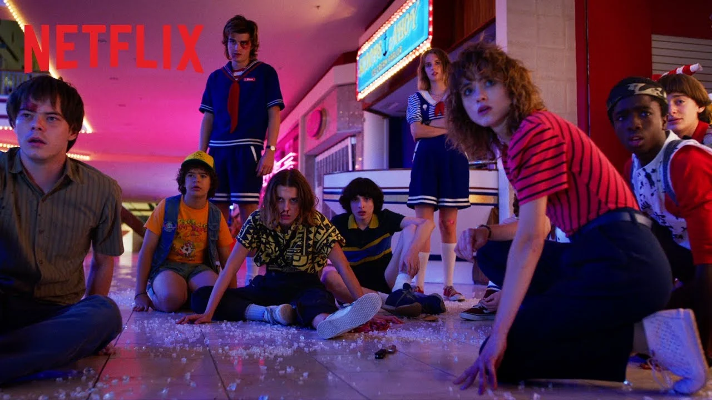


- 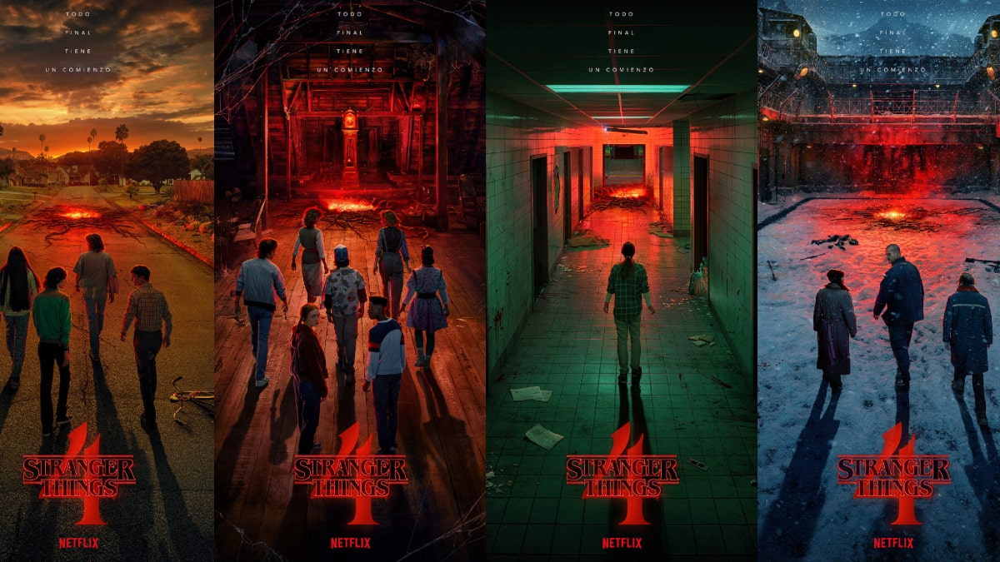

- 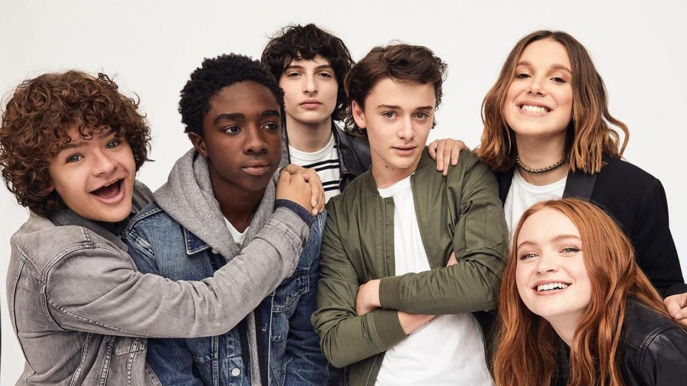
.png)
Millie Bobby Brown es una actriz y modelo británica. Saltó a la fama por su interpretación del papel de Eleven en Stranger Things.
Ha sido premiada con diversos premios, entre ellos, un Premio Saturn a "mejor actriz joven en una serie de televisión" y ha sido nominada a los Premios Emmy y al Sindicato de Actores de Cine. Es una de las actrices más jóvenes en haber sido nominada en la historia de los Premios Emmy.
Finn Wolfhard nace el 23 de diciembre de 2002 en Vancouver, Canadá. Sus primeros pasos en televisión tuvieron lugar en 2014, en un episodio de Los 100.
Pero fue en Stranger Things, la serie de Netflix, donde se dio a conocer ante el gran público. El joven actor interpreta a Mike Wheeler, un chico tímido, con la ayuda de sus amigos y de una misteriosa chica con dones especiales, se propone encontrar a su amigo desaparecido
Dustin Henderson es un personaje ficticio de la popular serie de televisión "Stranger Things".
Es un joven inteligente y carismático, conocido por su cabello rizado y sus dientes delanteros separados, por eso se lo apoda "Toothless". A lo largo de las temporadas, se ha ganado el cariño de los espectadores gracias a su personalidad amable y a su habilidad para el alivio cómico en situaciones tensas
Lucas Sinclair nació en la década de 1970 en Hawkins, Indiana, lo que lo convierte en uno de los personajes principales de la serie, que se desarrolla en los años 80.
Es un personaje que cuestiona y desafía las circunstancias extraordinarias que enfrentan, especialmente cuando se trata de las amenazas sobrenaturales. Su resistencia lo lleva a creer en lo desconocido y a menudo lo lleva a tomar decisiones racionales y protectoras para su grupo de amigos
Max Mayfield es una joven que se muda a Hawkins, Indiana, junto con su familia en la segunda temporada de Stranger Things.
Es presentada como una patinadora habilidosa y una apasionada de los videojuegos. Tiene una personalidad fuerte y audaz, a menudo desafiante y segura de sí misma. Su llegada a Hawkins High School y su interacción con el grupo de amigos de la serie, en particular con Lucas Sinclair, la convierten en un nuevo miembro del círculo íntimo del elenco
Will es presentado como un joven tranquilo, inteligente y aficionado a la música. A menudo se le muestra como un niño cariñoso y sensible.
Will es el personaje central en la primera temporada de "Stranger Things" cuando desaparece misteriosamente después de un encuentro con el Demogorgon, una criatura sobrenatural. Su desaparición desencadena una búsqueda desesperada y una serie de eventos sobrenaturales que son el foco principal de la trama
Nancy Wheeler nació en Hawkins, Indiana, en la década de 1960. Tiene una personalidad decidida y valiente, lo que la lleva a involucrarse en situaciones peligrosas a lo largo de la serie.
Desempeña un papel importante cuando comienza a investigar la desaparición de su amiga Barb Holland. Esta investigación la lleva a descubrir la existencia de fenómenos sobrenaturales, lo que la convierte en una pieza clave en la lucha contra las amenazas del otro lado
Jim Hopper es un hombre de mediana edad nacido en la década de 1950. Antes de los eventos de "Stranger Things", Hopper era un detective de la policía de Nueva York.
Sin embargo, debido a circunstancias personales y profesionales, se trasladó a Hawkins, Indiana, donde se convirtió en el jefe de policía local Su personaje investiga la desaparición de Will Byers. A medida que la serie avanza, se involucra en la lucha contra las amenazas sobrenaturales que acechan a Hawkins
Jonathan Byers nació en la década de 1960 en Hawkins, Indiana. Es el hijo mayor de Joyce Byers y el hermano mayor de Will Byers.
Jonathan es presentado como un joven introvertido, apasionado por la música y la fotografía. Se convierte en un personaje central de la trama cuando su hermano Will desaparece misteriosamente en la primera temporada. Él está decidido a encontrarlo y descubrir la verdad detrás de su desaparición
@InesRios: Me encantó tu página, siento que refleja todo lo que me gusta en Stranger Things gracias por crearla
@AlexiaBledel: Me gusto muchísimo el slider inicial con la cantidad de fotos que incluye y las visuales hacen que me sienta en Hawkins
@FlorenciaLaham: Que genialidad poder aprender un poco mas sobre mis personajes favoritos. ¡Gracias!
@JashySztern: La parte de las reviews es muy interesante ya que puedo ver lo que otros piensan y me parece fantistica
@AntonellaRocuzzo: Increible para la edad de mis hijos, me parece muy divertida y con muchas
¿Qué opinas? ¡Cuéntanos qué te pareció el sitio!